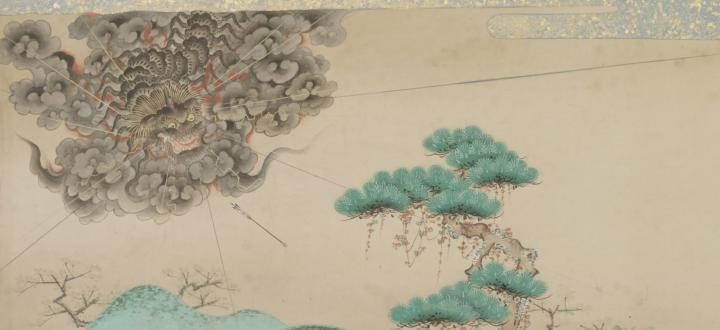

黒雲に包まれた獅子頭のような顔をした百足。百足は八方に光を放っており、足には炎をまとっている。詞書には百足について「まかふへくもなきむかてなり百千のいかつちときこへしハ大地をひゝかすおとなるへし二三千のたい松と見へしハあしにてやあるらんかしらハうしおにのことくにてそのかたち大なる事たとへんかたもなし」と説明されている。
著作者：英一蝶／出典：親書誌：U426_nichibunken_0094：田原藤太秀郷；タワラトウタヒデサト／日付：2008／資源識別子：U426_nichibunken_0094_0003_0000
Copyright (c)2010- International Research Center for Japanese Studies, Kyoto, Japan. All rights reserved.